Collection · source-fitted iron grille study
Walk the updated connected rooms · Previous ceiling and lighting pass
WASD to walk; Space resets; 2 opens the European gallery, 3 the French gallery. The iron grille seen beside the medieval portal is now present as open low polygon geometry on a low white plinth. It uses seven source-observed columns and material pixels from the existing Muse pass. This is a placement and shape study: row count, irregular scroll pattern, handedness, exact scale, braces, plinth and location remain provisional. Catalogue identity is still unmatched. Full room layout and object coverage are unfinished.
 Wide source: grille right of the portal; stone wall fragment farther east beside a different stair opening. Flat ceiling and multiple track lights.
Wide source: grille right of the portal; stone wall fragment farther east beside a different stair opening. Flat ceiling and multiple track lights.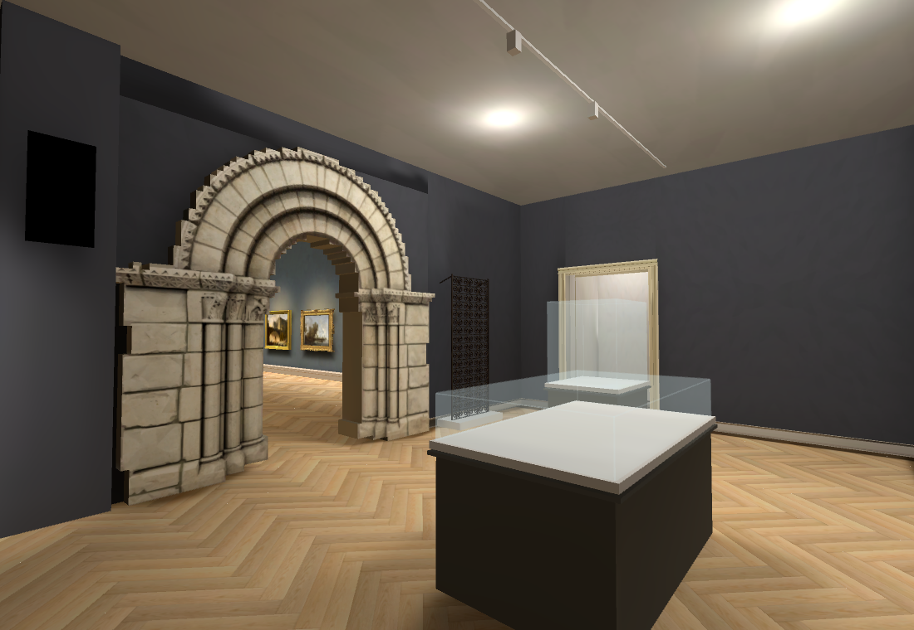
Current baked room wide: grille added beside portal. Source wall fragment, stair doorway and lighting layout still need work; positions and room proportions are provisional.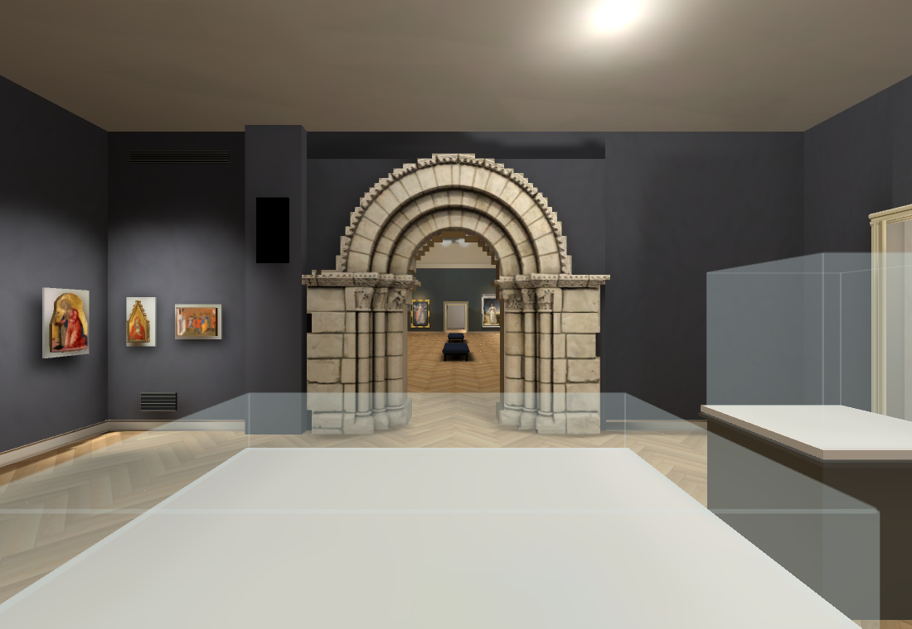
Previous pass: ceiling present, grille missing.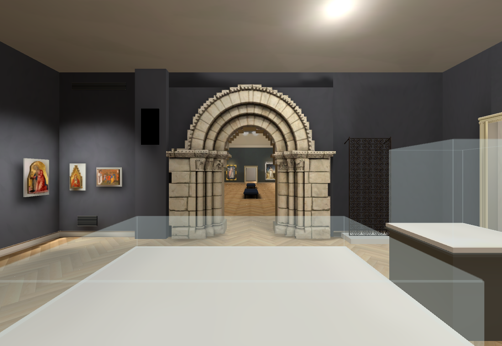
Current wide: open grille and its plinth added. Existing Hall remains visible through the portal. Case contents and surrounding wall geometry are incomplete.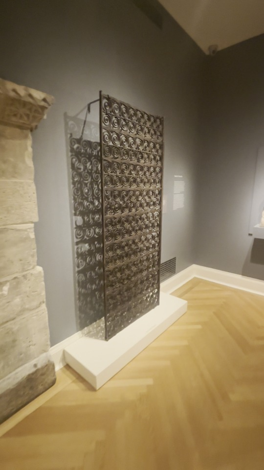
Native video source at12.375s: seven columns, irregular iron scrolls, wall brace and white plinth. Blur/perspective limit exact row counting and measurements.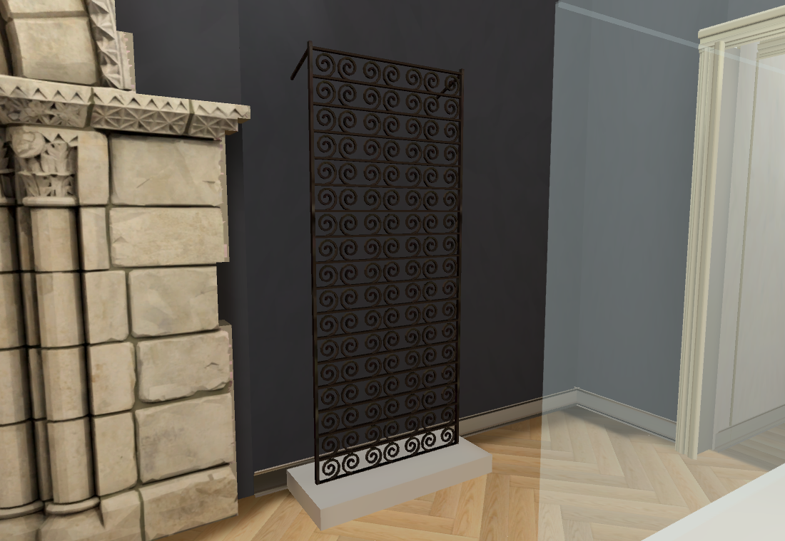
Native baked oblique: open scroll mesh, top rear support and colliding plinth. Plain profiles/uniform coils are a preliminary approximation, not accepted historical geometry.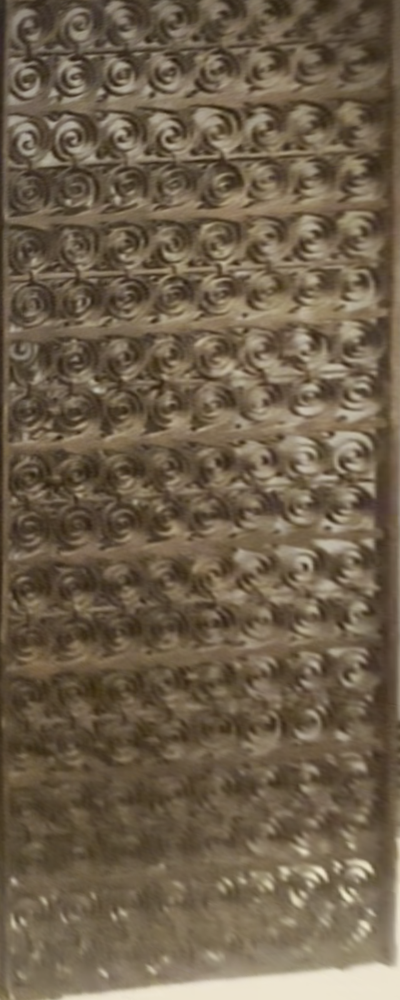
Manually straightened source study; aspect and metres not calibrated. Seven columns observed, row count unverified.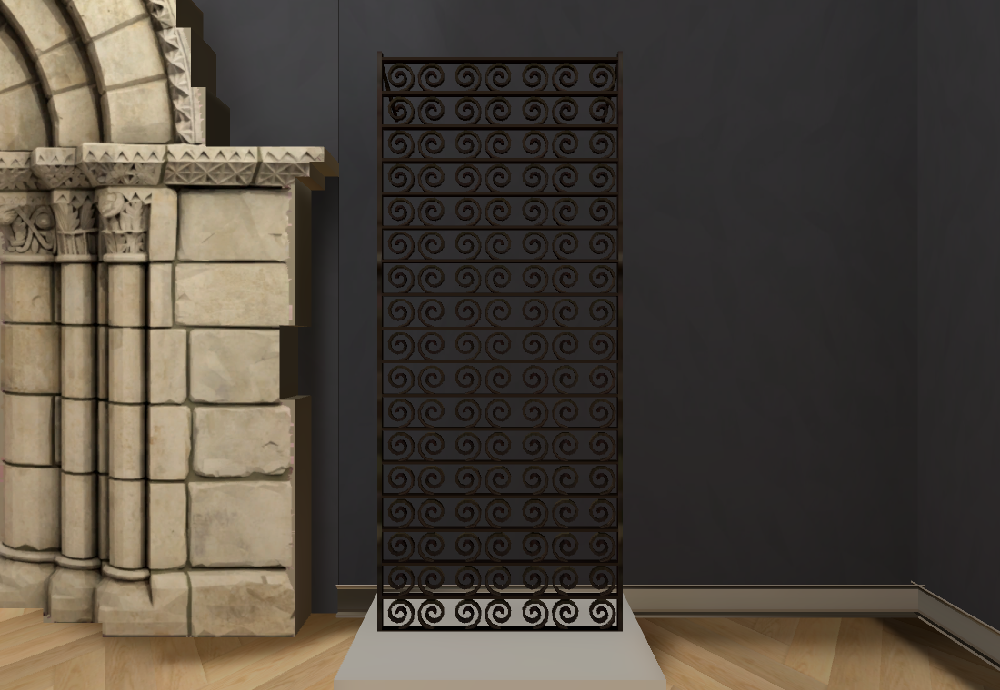
Current front: seven columns and17 provisional rows. Geometry closure verified independently for119 coil solids. Full grille union, source pattern and exact dimensions remain unaccepted.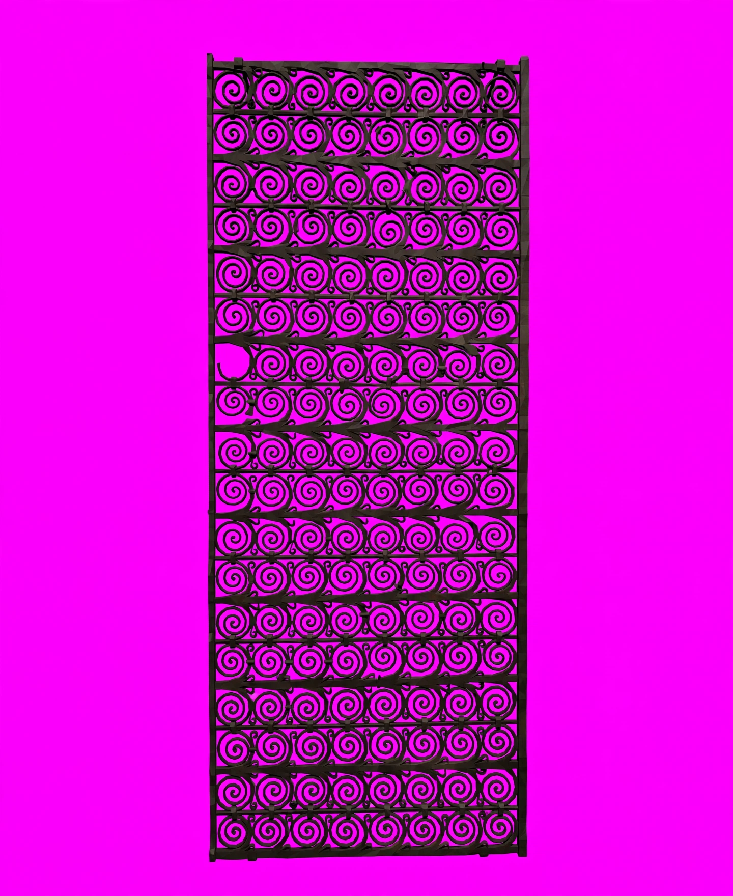
Existing$0.01 Muse sheet: eight columns, rejected for direct geometric installation. Only interior iron-post pixels reused in this pass.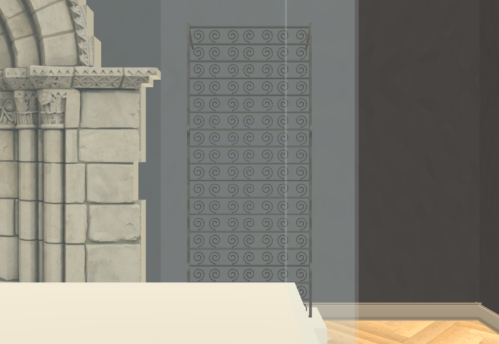
Retained earlier native trial: coils too thin/sparse and partly occluded by the foreground case. Revised mesh and front camera used in the current result.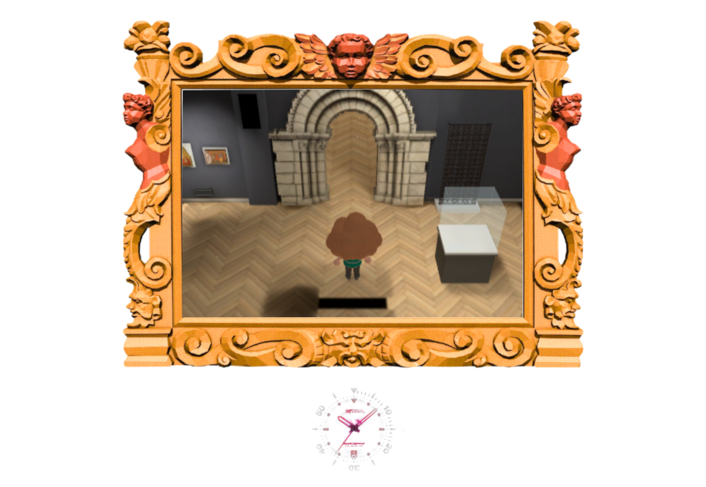
Actual elevated walking view: authored/baked ceiling cutaway retained, grille blocks visitor passage and adjacent east aisle stays clear.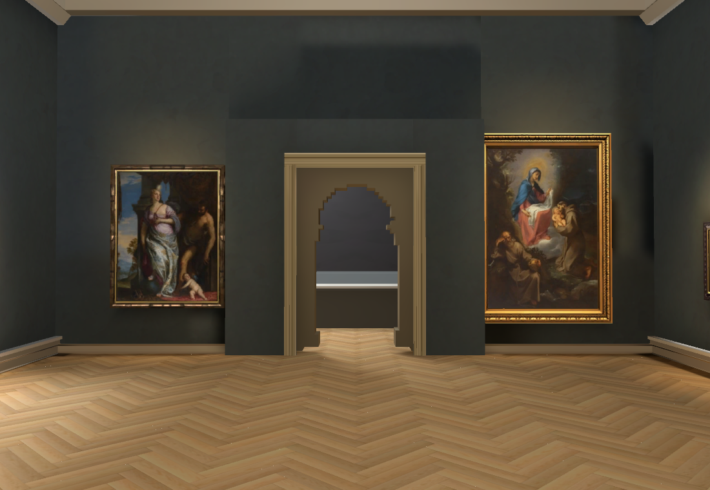
Existing Main Hall presentation, lighting and23 verified paintings retained.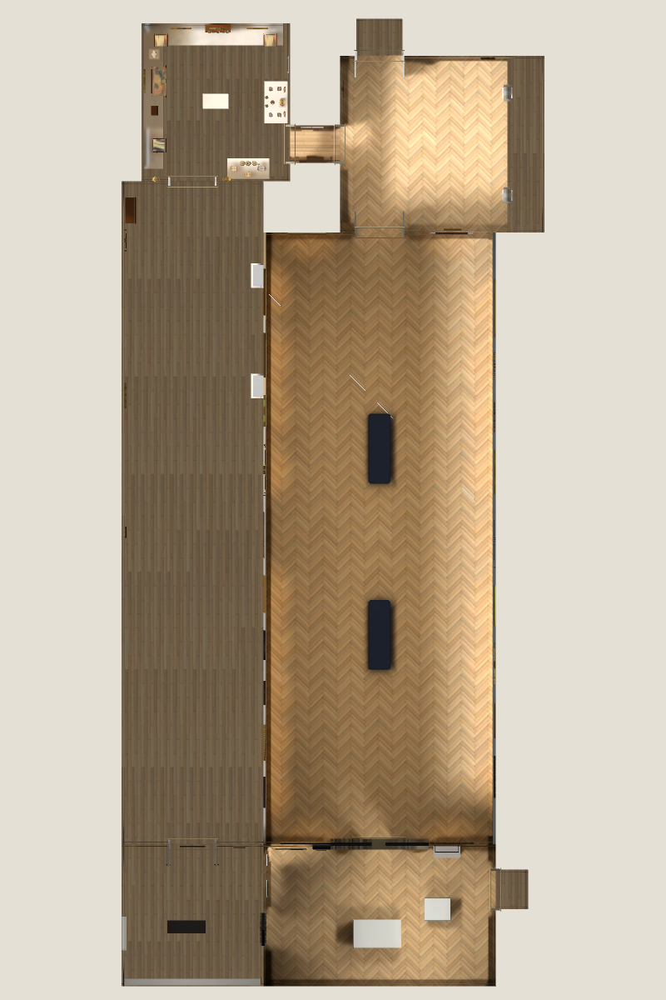
Connected prototype circuit. This is not a verified complete museum map; room metres, doors, object positions and missing contents remain open.RTX4070SUPER Chrome158/158 navigation/camera checks plus real keyboard round trip,33 continuous circuit segments,errors[],p9530.00ms.825 native baked surfaces; two authored ceilings and two baked copies retain visibility checks. Owning Shell46/50,4 known failures retained in checkpoint evidence. Repository checks and diff whitespace checks pass after archived source copies were named.gd.txt instead of.gd. No new native performance claim;60fps target is unresolved.
RISD catalogue lookup:100-result requests returned misleading empty lists. Known-ID and Monet positive controls work with25; valid searches are retained, broad first pages are incomplete. No identity assigned. No new paid generation; total$0.75 actual/$0.76 conservative. Heartbeat disabled; sole main worker. Next compare reciprocal wide shots across the rooms, then correct the medieval east-wall fragment/stair doorway, light tracks and remaining object/door placements. Failed head meshes remain unaccepted.
Source observations and uncertainties · Independent native coil proof · Browser checks · Catalogue query controls